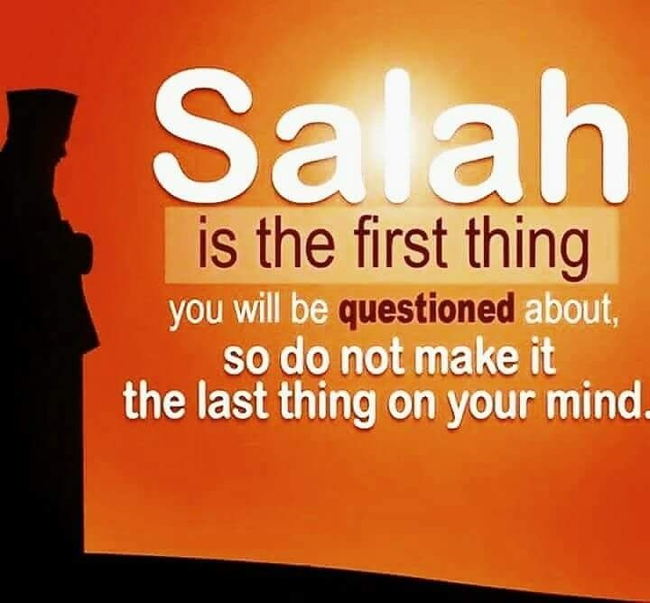

The Importance of Prayer in Islam
Prayer (Salah) is one of the Five Pillars of Islam and is a fundamental practice for every Muslim. It is a direct way to connect with Allah, seek His guidance, and express gratitude. The importance of prayer can be seen in the numerous references to it in the Quran and Hadith.
Allah says in the Quran: "And establish prayer and give zakah and obey the Messenger - that you may receive mercy" (Quran 24:56). This verse highlights the importance of prayer alongside other essential practices in Islam.
Praying five times a day helps Muslims to maintain their faith and stay focused on their spiritual goals. It also fosters a sense of discipline, as the prayers are spread throughout the day, reminding Muslims of their obligations to Allah.
In addition to its spiritual benefits, prayer has a positive impact on a Muslim's mental and physical well-being. It provides moments of peace and reflection, helping to reduce stress and anxiety.